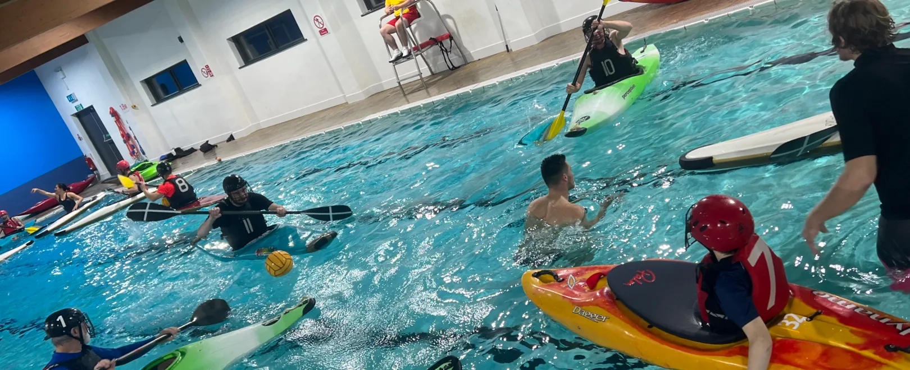
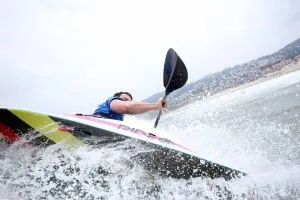

Founded in 2003, Bude Canoe club celebrates over 20 years of paddling in Bude!
We are a group of paddlers of all ages, that come together from all over Cornwall & Devon.
The club has offered Surf Kayaking and Canoe Polo over the years, but we have recently branched out to offer more...
The club is very proud to have trained and been home to many National and World Champions too! (some of which are coaches!)
We offer Winter & Summer sessions, with something for everyone. Take a look at what we get up to!
Bude Canoe Club is a volunteer-run Community Amateur Sports Club (CASC). Our coaches are Paddle UK qualified, our volunteers are DBS checked, the club is insured, and all kit and boats are provided.
 Affiliated
Affiliated

The club offers various types of kayaking, coached by some of the best paddlers in the sport! Take a look below!
Everyone has to start somewhere.... We all did! That's why our winter indoor and outdoor general sessions are fantastic for new paddlers and those who want to brush up on their skills. One of our friendly coaches will assist you where you need some help.
The club has a history of producing world class Surf Kayakers, and we have some that coach our club sessions. Who knows, you could be next!
It's fast, it's crazy, but such great fun for everyone! No matter your paddling experience, come and give it a try!
A great way to explore whilst kayaking. Different grades create different difficulties, meaning once you've got your core skills, you can work your way up.
No sneaky hidden costs, as it says below, is exactly how it is.
It's fast, it's crazy, but such great fun for everyone! No matter your paddling experience, come and give it a try!
Train with the Bude Smugglers Canoe Polo Team for some competitive action. We enter tournaments throughout the year, and host our own every August Bank Holiday:
The Andy Hambley Trophy.

Highlighted events & tournaments are FREE to enter for those with a Subscription Membership. All other events can be signed up to on Spond at an additional fee per event.
Canoe Polo Tournament, August Bank Holiday Monday.
Everyone has to start somewhere.... We all did! We know what it's like... committing to anything without knowing what's involved is a bit much sometimes. That's why we offer a Free Trial to those that are new to Bude Canoe Club.
We have all the equipment you will need, all you need to bring along is suitable swimwear and you're good to go. Get in touch, let us know you're coming down and come and try it out.